Humanitarian
Humanitarian
Jaffna Monitor
hellojaffnamonitor@gmail.com
17
N
iththilan (name changed), a courageous
United Nations worker, was one of
the witnesses to the harrowing scenes of
Sri Lanka's final war in 2009. He remains
among the few living who can testify to the
devastating atrocities committed by both the
Sri Lankan government and the Liberation
Tigers of Tamil Eelam (LTTE).
In September 2008, following a directive
from the Sri Lankan government ordering the
immediate evacuation of UN and international
humanitarian organizations from LTTE-
controlled territories, Niththilan was appointed
as the officer in charge of all UN operations in
the LTTE-controlled territory. In this pivotal
role, he led the UN mission within the LTTE-
controlled region, directing local staff in the
absence of his international colleagues.
Currently residing in Europe, Niththilan has
decided to break his silence and share his
experiences with 'Jaffna Monitor' under the
condition of anonymity.
How were you appointed as the official
in charge of the UN following the Sri
Lankan government's order for the
immediate withdrawal of UN staff from
LTTE-controlled areas?
BY:
Kaniyan Pungundran
fzpad; G+q;Fd;wd;
Diaries
A UN Worker's Exclusive Testimony to
'Jaffna Monitor' on the 15th Anniversary
of Sri Lanka's Brutal War Conclusion
Part-1
Humanitarian
Interview
Jaffna Monitor hellojaffnamonitor@gmail.com 18
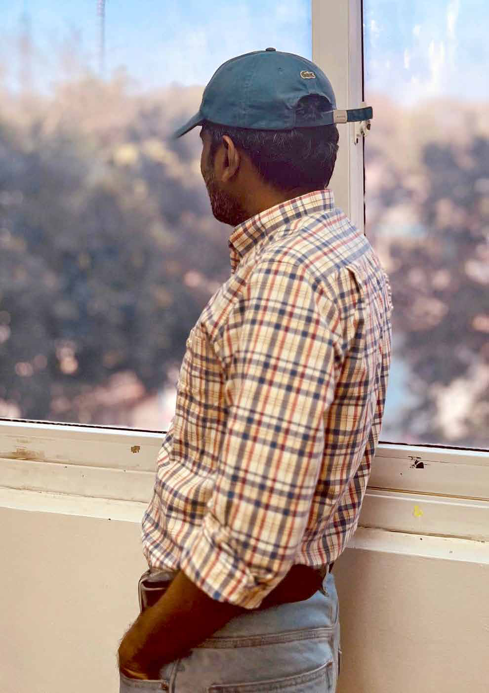
Jaffna Monitor hellojaffnamonitor@gmail.com 19 The order for evacuation was issued on September 2, 2008, during the peak of the war. At that time, it seemed inevitable that Kilinochchi—the de facto capital of the LTTE—would soon fall into military hands. I believe that the Sri Lankan government did not want any foreign observers present to witness the impending atrocities within the regions controlled by the Tigers. The claimed concern for the safety of United Nations organizations and their international staff was not the government's priority. Instead, their goal was to prevent external witnesses from observing the forthcoming human rights catastrophes—that is the truth. Hence, the government had to expel foreign observers from these areas. The evacuation order was issued abruptly. Our important meetings typically took place at the UNICEF building, located across the lane from the Kandaswamy Temple in Kilinochchi. During one such meeting, we received a directive from Colombo stating that all United Nations and international non-governmental organizations (INGOs) were ordered to evacuate the areas controlled by the LTTE, except for the ICRC. The ICRC was granted an exception due to its unique contractual obligations with governments and because it does not publicly discuss its observations in war zones. This notification came as a tremendous shock to us. We had planned to relocate all our operations to nearby Mallavi if Kilinochchi was captured, having already scouted locations for all United Nations organizations and international NGOs to continue their work. How did the people and the local staff of international organizations react when the international workers were ordered to leave? The Sri Lankan government's evacuation order extended not only to international staff but also to all aid workers, including locals. All international organizations were instructed to close their offices and withdraw from Tiger-controlled areas. This directive left the entire staff profoundly disheartened. The international workers, who had become deeply attached to the local people, felt particularly distressed. In my view, the United Nations and other humanitarian organizations should have used their global influence to challenge the government's directive. With over 350,000
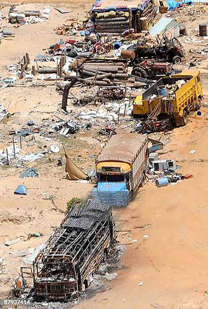
Jaffna Monitor hellojaffnamonitor@gmail.com 20 people living in these LTTE-controlled areas, these organizations should have taken a stand and declared that they would not abandon them. Yet, no one—not even the United Nations— made such a declaration. The absence of public advocacy from these organizations was deeply disappointing. If this was a blow to us, imagine the emotional turmoil of the local people. How did the general public react to this...? The disappointment among the people was palpable, sparking a spontaneous protest. Normally, in Tiger-controlled areas, the Tigers themselves orchestrated all protests and demonstrations. However, this time, I can confidently say that the protest was genuinely initiated by the people. They desperately pleaded with the international workers, begging them not to leave. The people physically blocked their way, refusing to let them depart. In this emotionally charged situation, it became necessary to seek assistance from Nadesan, the political head of the LTTE. Following our appeal, the Tigers dispatched their clearance team to ensure the path was safe before any movements could proceed. Was it not a problem for the LTTE that international workers were leaving? Internally, the LTTE was not in favor of the departure of international workers. However, they also did not want to be tarnished with the reprehensible label of hindering UN workers. The Tigers have always sought international recognition and were cautious not to antagonize a major organization like the UN. How many local UN workers remained inside the LTTE-held area after the evacuation of international workers? More than a hundred local UN staff members and their families, originally from outside the Vanni region but working in LTTE-controlled areas, successfully secured travel passes from the LTTE and departed with the international staff. However, local staff native to the Vanni region were only granted travel passes for themselves, as the LTTE did not issue passes for their families. Nevertheless, local workers who had close ties with the LTTE managed to secure passes for their families, and they, too, departed. After this, a total of 130 people, including 35 local workers and their family members, remained inside LTTE territory. A UN Flag Hoisted in Suthanthirapuram, Mullaitivu in 2009
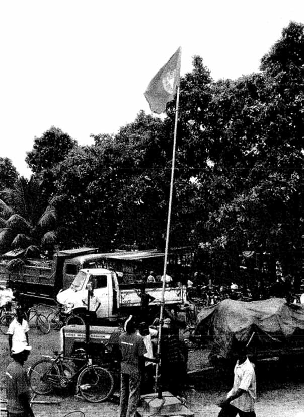
Jaffna Monitor hellojaffnamonitor@gmail.com 21 I spoke with the UN Resident Coordinator in Sri Lanka and conveyed that I, along with the few UN workers remaining in the LTTE-held area, did not want to abandon the people in distress. We wanted to continue working for them and to act as international witnesses to the atrocities occurring there. At one point, the UN Resident Coordinator, Neil Buhne, agreed to this arrangement, and I was appointed as the officer in charge of the entire operation. All UN operations in the Tigers' area came under my supervision, and I was to report directly to Neil Buhne. Were you provided with any guarantees for your safety by the LTTE or the Sri Lankan government? We were given assurances by Nadesan, the political leader of the LTTE. He issued a letter to the local UN workers and their families, guaranteeing them exemption from compulsory conscription, and we encountered no issues in our movements from the Tigers' side. Nadesan assured us that the same respect and honour given to withdrawing international workers would also be extended to the local workers. Furthermore, he guaranteed that the Liberation Tigers would not intrude into any UN premises. Did the LTTE uphold its promise? The answer would be both yes and no. As the military was nearing Kilinochchi, our UN storage facilities in the area contained essential supplies such as dry foods and other foodstuffs. Our stores also held thousands of litres of diesel and petrol, which were scarce in the LTTE-held area. However, one day, an intelligence unit from the LTTE forcefully entered our office at the 55th-mile post in Kilinochchi, intimidated the guards, and loaded all the stored diesel and petrol. Approximately 20-30 barrels were taken. We reported this incident to Nadesan, who acted promptly. He contacted the intelligence unit and demanded the return of the stolen items. Although we did receive them back, about a third was missing, and the returned diesel and petrol were contaminated with water, rendering them unusable. Did the LTTE confiscate food items and dry rations from the UN stores in the Vanni region during the conflict? No, the LTTE did not take food items or dry rations from the UN stores in the Vanni region. Instead, they only requisitioned petrol and diesel, which were scarce resources at the time. During this period, essential food items like rice were abundantly available, with prices as low as 20 rupees. The Vanni region was largely self-sufficient and rich in rice fields, seafood, and vegetables. Although the local population lacked monetary wealth, there was no widespread hunger until the final months of the conflict. As the war intensified, the LTTE leadership relocated to the seashores of Mullaitivu, forcibly taking large numbers of civilians with them. This move dramatically altered the local dynamics, as people lost access to their agricultural lands, leading to increased hardship and poverty. You mentioned that UN personnel and their families were exempted from the forced conscription by the LTTE. Could you elaborate on how the LTTE's forced
Jaffna Monitor hellojaffnamonitor@gmail.com 22 recruitment of children was conducted during that period? Additionally, how did the local population react to these abductions, and what impact did these actions have on the relationship between the LTTE and the community? In my opinion, in the eastern provinces under the control of Karuna Amman, then-chief of the Batticaloa and Ampara districts, the LTTE enforced a strict and ruthless conscription policy. This approach was fully endorsed by the LTTE's leadership in the North, who had observed its effectiveness in the East and had long contemplated implementing it in the North. The LTTE launched an attack on the Muhamalai Forward Defence Line on August 11, 2006, aiming to advance towards Jaffna. Reportedly, the LTTE achieved initial success on the first day. However, from the second day onward, recognizing the strategic importance of Jaffna, the Sri Lankan Army deployed significant forces in response, and the LTTE lost this offensive. Following the LTTE's withdrawal from Muhamalai in 2006, the leadership reportedly decided to intensify their recruitment efforts. Aerial View of the Devastated Mullivaikal Region Logo of NESOHR and Its Leader, Father Karunaratnam (Kili Father)
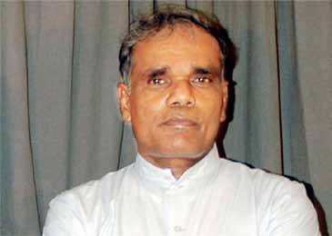
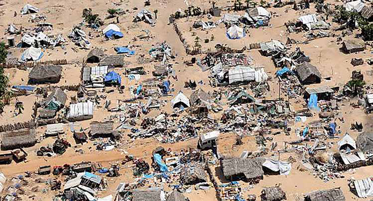
Jaffna Monitor hellojaffnamonitor@gmail.com 23 Initially, the LTTE called for voluntary enlistment from families, requesting that at least one member per non-combatant family join. However, this appeal met with limited response, attracting only 25-30 youths. Subsequently, the recruitment strategy shifted to compulsory, ruthless enlistment, mandating that one person from each family participate in the movement. This policy shift led to a surge in complaints to both the United Nations High Commissioner for Refugees (UNHCR) and the North-East Secretariat on Human Rights (NESOHR), an entity associated with the LTTE. Despite its ties, NESOHR, under the leadership of Father Karunaratnam (also known as Kili Father), received a vast number of grievances about forced conscriptions and abductions of children. A close friend of mine who worked at NESOHR conveyed to me that they received around 6,000 complaints by September 2008. Post-September 2008, the situation concerning child abductions reportedly deteriorated, and the LTTE started abducting children and anyone who could bear arms. Before 2008, UNHCR and NESOHR received around 6,000 complaints, but this does not imply that only 6,000 incidents occurred. From what I understand, there were many more incidents that went unreported. However, after 2008, the situation with forced enlistments spiralled out of control. The LTTE's ruthless child abduction units went on a rampage, abducting even small children as young as 14 years old. Why did the UN remain a mute spectator to these atrocities? Couldn't the UN take any action? We were essentially mute spectators; realistically, we couldn't take any significant actions. We did not have any formal agreements with the LTTE, but they ensured our safety since we were operating within their regions. The UN typically worked with the LTTE, and while we were able to offer advice, we couldn't direct their actions. In this respect, the UN was indeed weak, a fact I must acknowledge. UN officials discussed the issue of forced enlistments unofficially with LTTE leadership, including figures like Tamilselvan—the then Political leader of the LTTE while he was alive—as well as with Nadesan. Unfortunately, nothing changed. The LTTE claimed to be the de facto government, asserting that mandatory training and enlistment were standard practices in many countries. Our limited influence meant that we could only secure a commitment from them not to forcibly enlist UN workers and their families. I must shamefully admit that was the extent of our capabilities. Frankly, while ensuring our own safety, we could not stop the forced enlistments or abductions. As the war intensified and LTTE territories diminished, they even abducted a few UN workers and their family members. In my opinion, the primary reason for the LTTE's defeat was their policy of forced enlistment. How can you abduct someone and expect them to fight loyally? This was a thoughtless and cruel decision by the LTTE leadership. What are the atrocities committed by the LTTE in forced abductions and enlistments? I hesitate to recall these incidents, but there were many heart-wrenching stories that
Jaffna Monitor hellojaffnamonitor@gmail.com 24
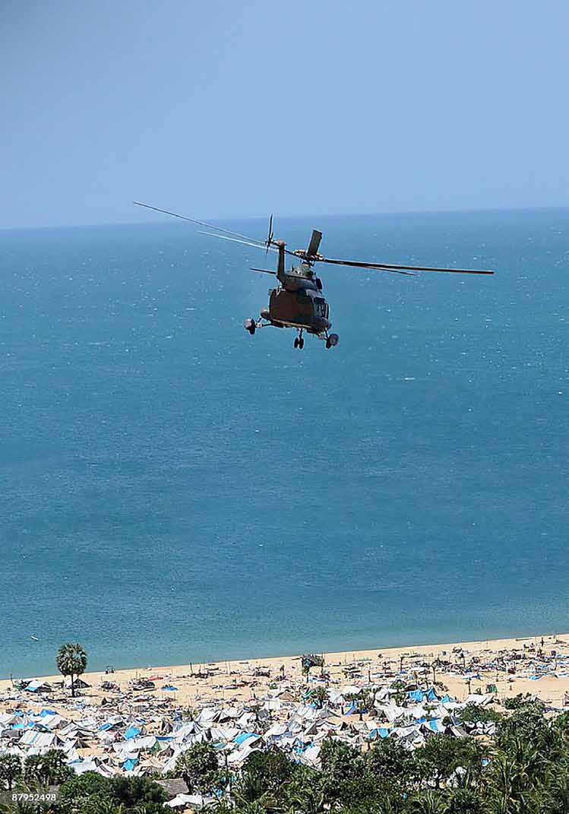
Jaffna Monitor hellojaffnamonitor@gmail.com 25 highlight the LTTE's ruthlessness. Let me share a few. I knew a girl, the top student in the biology stream at A-level in Kilinochi district, who was awaiting admission to Jaffna Medical College. She was the first in her family to potentially become a doctor. Tragically, she was forcibly abducted by the LTTE and died just a few months after the abduction. The LTTE abducted children from their beds and girls while they were taking baths. They abducted children after mercilessly beating their parents. When parents hid their children, the LTTE abducted the parents and tortured them until the children returned. To escape these ruthless abductions, many people married off their young daughters, some as young as 15 or 16, thinking that if they became pregnant, the LTTE would not abduct them. Hundreds of young girls, only 15,16 years old, got married and became pregnant. In the Mathalan area, the LTTE even abducted young girls who were two or three months pregnant and sent them to the front lines. What the LTTE did was a shameful act that every Tamil worldwide should be ashamed of. I do not know who initiated this forced enlistment strategy, but how could the LTTE leadership think that youths, abducted and sent to the frontline, would fight with ferocity? Some suggest that this forceful enlistment may have occurred without the knowledge of the LTTE leader, Prabhakaran..? The LTTE often publicly claimed to possess a formidable intelligence wing. It is laughable when people suggest that these atrocities occurred without the knowledge of Prabhakaran, which directly challenges the well-known centralized leadership structure of the LTTE. I am certain that nothing significant could happen in LTTE-controlled territories without Prabhakaran's knowledge. Given that we were operating within the LTTE's clear, single-window system, it is absurd to suggest that these atrocities took place without the awareness of the LTTE leadership. Who has been actively involved in carrying out the leadership's orders to forcefully abduct children? It was carried out by numerous individuals within the LTTE, with the political wing and the Tamil Eelam police at the forefront. Local area commanders were also deeply Brutal child abductors and war criminals of the LTTE: From left to right: Elilan, former Trincomalee Political Head of the LTTE; C. Ilamparithi, former Jaffna Political Head of the LTTE; and Kannathasan, former Head of the Tamil Eelam Music College
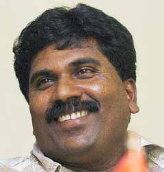
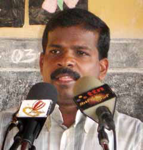
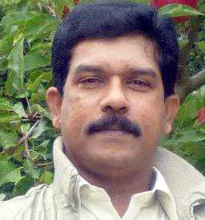
Jaffna Monitor hellojaffnamonitor@gmail.com 26 involved. Among those who engaged in these brutal acts, as I witnessed, three figures stood out for their notorious involvement: Ezhilan, who headed the Trincomalee Political Department; Kannathasan, formerly the head of the Tamil Eelam Music College, who later transitioned to an academic role as a lecturer at Jaffna University; and Ilamparithi, former Jaffna political wing head of the LTTE. These individuals orchestrated a chilling campaign of child abduction, and I witnessed all three engaging in these brutal acts. However, it is important to note that these three were not the only ones involved in the child abductions. How was Kannathasan involved in the brutal abductions you witnessed? Kannathasan led a brutal abduction squad. I distinctly remember his name and actions from February 4, 2009, the day we, UN workers, were forced to move to the Mathalan area from Puthukkudiyiruppu. Prior to that, we were stationed directly in front of Puthukkudiyiruppu Hospital. It was Sri Lanka's Independence Day, and the government aimed to bring Puthukkudiyiruppu under control by that date. In their efforts, the government launched intense attacks on the area. On the night of February 3, the Sri Lankan government employed cluster bombs for the first time, with several shells striking Puthukkudiyiruppu Hospital. That same night, I immediately informed my UN reporting channel about the use of cluster bombs and attached a few photos of the unexploded ordnance. The UN quickly reacted and published a report condemning the use of cluster bombs, which are globally banned. However, the UN shamefully withdrew the statement on the same day following pressure from the Defense Ministry. We, United Nations staff members and our families were given just two hours by the government to evacuate on February 4. We relocated to the Mathalan area, and Puthukkudiyiruppu Hospital also moved to an unfinished building in the new Mathalan area. Dr. Sathiyamoorthy, then the director of Kilinochchi Hospital and now the director of Jaffna Teaching Hospital, is a close friend. He contacted me, suggesting that proximity to the UN staff might shield the hospital from shelling. He requested that we establish our UN hub near the temporary hospital. In front of the temporary hospital was a rice field with a lone poovarasam tree (Indian tulip tree). Under this tree, we raised the UN flag and recorded the GPS coordinates at its four corners, sending them to our office in Vavuniya to officially mark it as a UN hub. Our hub was identified by two trucks and a flag. Dr. Sathiyamoorthy
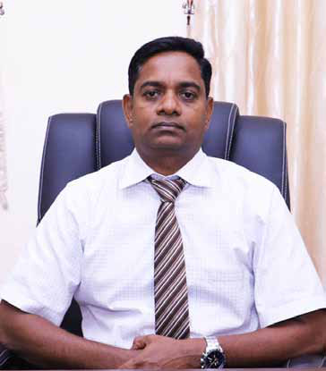
Jaffna Monitor hellojaffnamonitor@gmail.com 27 For many months, terrible abductions occurred around us, but inside our UN hub, none of our staff or their children were abducted. However, Kannathasan led an abduction team that entered our UN hub in the Mathalan area and abducted four people, including two of our staff. I also witnessed him leading a brutal abduction squad and abducting children. Regrettably, I did not file a criminal case against him, a decision I still regret today. Was Kannathasan carrying out the abductions because he was ordered to by the top command, or was he acting willingly? Kannathasan conducted these abductions with great enthusiasm. From my observations, he seemed to enjoy directing a large team of child abductors and took pleasure in the act. A member of the Tamil Eelam police, who was part of the team that came to abduct UN staff members, was a known person to me. He confessed that he was carrying out these terrible acts because he felt there was no other way and he was obeying orders from the top, but Kannathasan was different. He willingly engaged in these actions with evident enjoyment. He abducted a young girl named Vijayabalan Manjula and sent her to the frontline, where she tragically died. Her mother filed a case against him, and the Vavuniya High Court sentenced him to life imprisonment—a sentence he truly deserved. However, our Tamil National Alliance parliamentarian, Sumanthiran, defended Kannathasan in the court of appeal, and he was later released. Sumanthiran should be ashamed and deeply regret his actions. He failed to consider the agony of the mother who lost her child. I'm sure Kannathasan abducted about 500 children, with at least 300 of them killed on the frontline. To be continued... War Criminal Kannathasan M.A.Sumanthiran
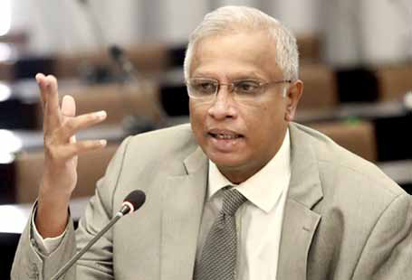
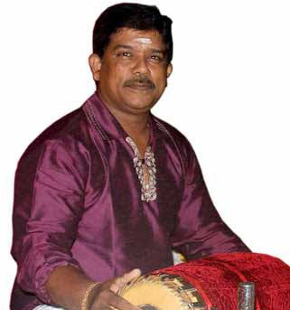